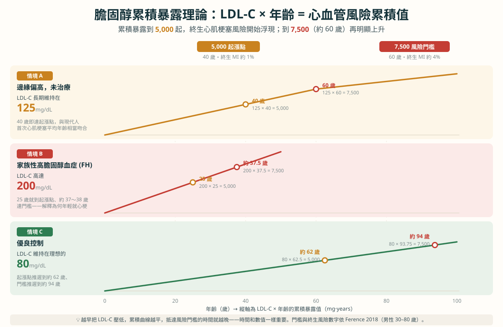

換個角度看膽固醇：不是「濃度」，是「總帳」
大家習慣問：「我膽固醇高不高？」但更關鍵的問題其實是：「我這個數字，累積了多久？」
壞膽固醇（LDL-C）會一點一滴鑽進血管壁、堆成斑塊。這個過程是日積月累的：濃度越高，每年堆積越快；維持越久，堆得越多。醫學上用一個直觀的方式表示這筆總帳——「LDL-C 濃度 × 年數」（單位 mg·years），就像把每年的「膽固醇欠款」全部加起來。
一張圖看懂：三種人生，三條累積曲線
下面這張圖，把「LDL × 年齡」的累積帳單畫出來。橫軸是年齡、縱軸是累積暴露值。兩條參考線來自 Ference 等人 2018 年的研究：累積到約 5,000（起漲點）時，一生中發生心肌梗塞的「終生」累積風險開始浮現（超過約 1%）；到 7,500（約 60 歲那條）時終生風險再明顯上升（約 4%）。請特別注意：這裡的 1%、4% 指的是「終生」累積風險，不是常見的「10 年風險」，且原研究主要以男性 30～80 歲族群估算——個人實際風險還受性別、血壓、血糖、抽菸等許多因素影響。

情境 A ｜ 邊緣偏高、沒治療（LDL 125）
膽固醇「只是有點高、又沒症狀」，很多人就放著。但 125 × 40 年 = 5,000，40 歲就默默走到起漲點；到 60 歲累積 7,500。有意思的是——這和現代人首次心肌梗塞的平均年齡相當吻合。所謂「沒事」，其實是帳單在你沒感覺時一直加。
情境 B ｜ 家族性高膽固醇血症 FH（LDL 200）
如果因為遺傳，LDL 從小就高達 200，累積速度會快到嚇人：200 × 25 年 = 5,000，25 歲就到起漲點；約 37～38 歲就衝到 7,500。這就解釋了為什麼有些人年紀輕輕、生活看起來也不差，卻早早心肌梗塞。這也是為什麼：有早發性心臟病家族史的人，應該提早檢查血脂。
情境 C ｜ 優良控制（LDL 80）
反過來，若長期把 LDL 壓在理想的 80：80 × 62.5 年 = 5,000，起漲點推遲到 62 歲；門檻推遲到約 94 歲。曲線又平又緩，等於把心血管風險推到人生很後段——甚至可能一輩子都沒走到發病門檻。這，就是「趁早降」的威力。
越早、越低、越久，好處會「複利」
你要對付的，其實是那條曲線「下面的面積」——而時間一直在累加。所以策略很簡單：把濃度壓低，讓每年新增的面積變小，曲線就變平，門檻就推遲。
那我該怎麼辦？
- 知道自己的 LDL-C 數字，也知道它「高了多久」——把歷年抽血報告帶去門診很有幫助。
- 有家族早發性心臟病史（父母/兄弟姊妹很年輕就心梗、中風）→ 提早、主動檢查血脂，別等有症狀。FH 越早發現越好處理。
- 生活型態是地基：少飽和脂肪與超加工食物、多蔬果全穀纖維、規律運動、控制體重、戒菸——這些都能降低每年新增的累積。
- 該吃藥就別拖：高風險族群（已有心血管病、糖尿病、FH）通常需要藥物把 LDL 壓到更低的目標；藥物的保護會隨時間複利，早開始更划算。